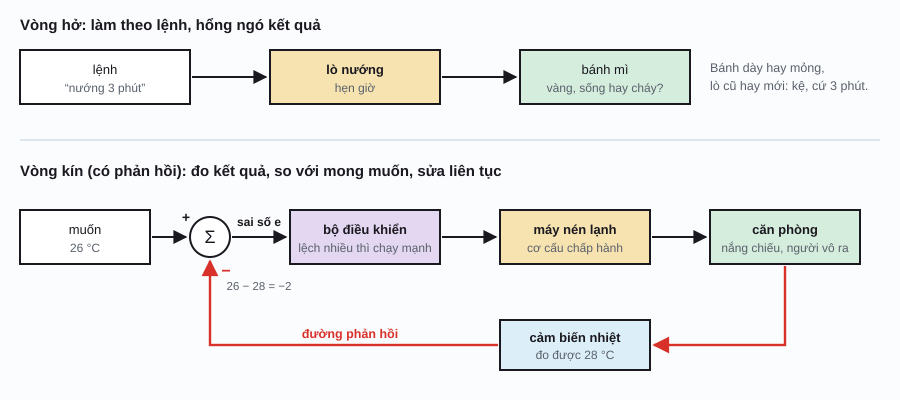
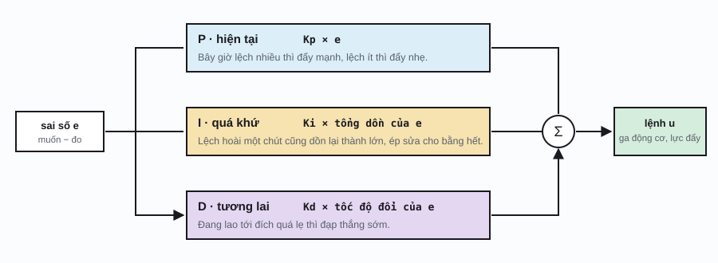
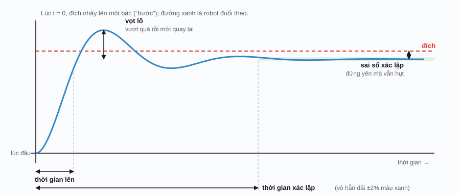

Robotics / Phần 2
Điều khiển và phản hồi
Ở Phần 1, mình tính ra được khớp cần quay bao nhiêu độ. Nhưng ra lệnh “quay 40 độ” cho động cơ thì nó có quay đúng 40 độ hông? Tay robot nặng hơn bữa qua, gió thổi, bánh răng mòn… Bí quyết để robot làm đúng giữa đời thực lộn xộn là phản hồi: đo coi mình đang lệch bao nhiêu, rồi sửa, liên tục, hàng trăm tới hàng ngàn lần mỗi giây.
Vòng hở và vòng kín
Cái lò nướng bánh mì hẹn giờ là điều khiển vòng hở (open-loop control): nó chạy đúng 3 phút rồi tắt, bánh mì dày hay mỏng, lò nóng sẵn hay chưa, nó hổng quan tâm. Muốn đúng thì phải biết trước mọi thứ, mà đời thì ít khi chiều mình vậy.
Cái máy lạnh thì khác: nó có cảm biến nhiệt, thấy phòng còn nóng hơn mức muốn thì chạy tiếp, mát rồi thì nghỉ. Đó là điều khiển vòng kín hay điều khiển phản hồi (closed-loop, feedback control). Bạn làm chuyện này hằng ngày mà hổng để ý: rót nước vô ly thì mắt canh mực nước, gần đầy thì rót chậm lại.

Trong vòng kín có bốn vai: điểm đặt (setpoint) là cái mình muốn; cảm biến đo cái đang có; bộ điều khiển (controller) nhìn sai số mà quyết định ra lệnh bao nhiêu; cơ cấu chấp hành thi hành lệnh. Cái hay của phản hồi là nó tự sửa được những thứ mình hổng lường trước: gió, tải nặng, động cơ yếu đi. Cái giá phải trả là nếu sửa vụng thì hệ có thể lắc lư, thậm chí càng sửa càng tệ.
PID: hiện tại, quá khứ, tương lai
Cách đơn giản nhất: bật–tắt
Thấp hơn đích thì mở hết ga, cao hơn thì tắt máy. Cái bàn ủi và nhiều tủ lạnh đời cũ chạy kiểu bật–tắt (bang-bang control) như vậy. Với nhiệt độ thì tạm được, vì nhiệt thay đổi chậm. Với một con drone thì… thử ở minh họa dưới đây là biết: nó nhảy lên nhảy xuống hoài quanh đích.
Ba câu hỏi của PID
Bộ điều khiển phổ biến nhất thế giới, có mặt trong máy lạnh, ô tô, nhà máy, động cơ của hầu hết cánh tay robot, là PID. Nó tính lệnh bằng cách cộng ba câu trả lời cho ba câu hỏi về sai số \(e\):

e(t): sai số lúc t, bằng điểm đặt trừ giá trị đo; u(t): lệnh gửi cho cơ cấu chấp hành (ví dụ lực đẩy của cánh quạt); ∫ (tích phân): cộng dồn sai số từ lúc đầu tới giờ, tính cả thời gian; de/dt (đạo hàm): sai số đang đổi nhanh cỡ nào; Kp, Ki, Kd: ba hệ số mà kỹ sư phải chỉnh, gọi là chỉnh thông số (tuning).
- P, hiện tại: lệch nhiều đẩy mạnh, lệch ít đẩy nhẹ. Nghe hợp lý, nhưng chỉ có P thì drone giống lò xo: kéo về thì vọt quá, bật ngược lại, dao động hoài.
- D, tương lai: nhìn coi sai số đang giảm lẹ cỡ nào; nếu đang lao về đích quá nhanh thì đạp thắng trước khi tới. D giống bộ giảm xóc, làm dịu dao động.
- I, quá khứ: drone nặng 1 kg cần lực đẩy cỡ 9,8 N chỉ để lơ lửng. Với P và D, lực đó chỉ có khi còn sai số, nên drone treo lơ lửng thấp hơn đích một khúc hoài. I cộng dồn khúc hụt đó theo thời gian, tới khi đủ lớn để bù trọng lực, rồi sai số mới về 0.
PID giữ độ cao drone
Chỉnh ba núm Kp, Ki, Kd rồi coi drone bayThử lần lượt bốn nút ở trên, mỗi lần đổi độ cao muốn tới để coi phản ứng:
- Bật–tắt: lắc lư quanh đích hoài, ga lúc mở hết lúc tắt hẳn. Tốn pin và tội động cơ.
- Chỉ P: dao động hổng dứt, và tâm dao động nằm dưới đích.
- PD: hết lắc, nhưng drone đứng yên dưới đích một khúc. Đó là sai số xác lập. Bấm “Chở thêm hàng”: hụt càng nhiều.
- PID: tới đúng đích. Bấm “Gió giật xuống” hay “Chở thêm hàng”: drone chao một chút rồi tự về lại, vì khâu I từ từ tăng ga bù vô.
- Thử cho Kp thật lớn, Kd bằng 0: dao động mạnh hơn. Cho Kd thật lớn: drone leo lên chậm rì như đi trong mật ong.
Đo coi điều khiển tốt hay dở
Cách kiểm tra quen thuộc nhất là cho điểm đặt nhảy lên một bậc, rồi coi hệ đuổi theo ra sao. Đường cong đó gọi là đáp ứng bước (step response), và người ta chấm nó bằng bốn con số:

| Chỉ số | Nghĩa là | Muốn | Núm nào ảnh hưởng nhiều |
|---|---|---|---|
| Thời gian lênrise time | Mất bao lâu để tới gần đích (thường tính tới 90%) | Ngắn | Tăng Kp thì lên lẹ hơn |
| Vọt lốovershoot | Vượt quá đích bao nhiêu phần trăm | Ít | Tăng Kd thì giảm; tăng Kp, Ki thì tăng |
| Thời gian xác lậpsettling time | Mất bao lâu để nằm yên trong dải ±2% quanh giá trị cuối | Ngắn | Kd vừa phải giúp hết lắc lẹ |
| Sai số xác lậpsteady-state error | Đứng yên rồi mà vẫn hụt bao nhiêu | Bằng 0 | Ki khử được |
Chỉnh ba con số này bằng cách nào? Năm 1942, hai kỹ sư Ziegler và Nichols đưa ra một công thức kinh nghiệm: tăng Kp tới khi hệ vừa bắt đầu dao động đều, đo chu kỳ dao động, rồi tra bảng ra Kp, Ki, Kd. Ngày nay người ta hay mô phỏng trước trên máy tính, hoặc để phần mềm tự dò, nhưng thợ lành nghề vẫn hay chỉnh tay theo cảm giác: tăng P tới khi gần lắc, thêm D cho êm, thêm chút I cho hết hụt.
Ổn định: giữ thứ vốn muốn ngã
Thử dựng cây chổi đứng trên lòng bàn tay. Chổi vốn muốn ngã; bạn phải liên tục dời tay về phía nó đang ngã để chụp lại. Hệ như vậy gọi là không ổn định (unstable): để yên là hỏng, hổng có phản hồi là hổng sống nổi. Ngược lại, hệ ổn định (stable) là hệ bị xô lệch rồi tự quay về, như cái võng đứng yên lại sau khi bị đẩy.
Bài “con lắc ngược trên xe” (cart-pole) là bài tập kinh điển của ngành điều khiển, và là họ hàng của nhiều thứ thật: xe điện tự cân bằng, robot hai chân, robot hình người đứng một chân, tên lửa đáp thẳng đứng xuống bệ. Luật điều khiển rất trực giác: gậy nghiêng qua phải thì chạy xe qua phải để “đỡ” chân gậy.
F: lực đẩy xe (dương là đẩy qua phải); θ: góc nghiêng của gậy so với phương thẳng đứng (dương là nghiêng qua phải); θ̇ (theta chấm): tốc độ nghiêng, tức gậy đang ngã nhanh cỡ nào. Ở đây sai số chính là θ, vì đích là θ = 0.
Xe giữ cây gậy đứng
Đẩy cây gậy, coi bộ điều khiển chụp lạiNhững điều có thể kiểm tra trên minh họa:
- Tắt “Giữ xe ở giữa đường ray”, rồi kéo Kp xuống dưới cỡ 12: gậy ngã luôn, vì đẩy xe cỡ đó hổng đủ thắng trọng lực kéo gậy xuống. Bật lại “giữ xe ở giữa” thì ngưỡng còn cao hơn, cỡ 24, vì bộ điều khiển phải lo thêm chuyện kéo xe về. Hệ không ổn định đòi hỏi phản hồi đủ mạnh, chứ có thôi chưa đủ.
- Kéo Kd xuống dưới cỡ 5 (đang bật “giữ xe ở giữa”): gậy lắc qua lắc lại càng lúc càng dữ rồi ngã. Thiếu “thắng”, xe chụp trễ hoài.
- Tắt “Giữ xe ở giữa đường ray” rồi đẩy gậy: gậy vẫn đứng, nhưng xe trôi dần rồi đụng tường. Muốn giữ cả gậy lẫn xe thì phải điều khiển nhiều thứ cùng lúc. Mẹo ở đây hơi ngược đời: muốn xe chạy về bên trái, trước hết phải nhích qua phải một chút để gậy nghiêng qua trái, rồi mới chạy theo được.
- Đẩy liên tục nhiều lần: lực đẩy chạm giới hạn 30 N (“hết ga”) thì bộ điều khiển hay cỡ nào cũng bó tay.
Điều khiển nhiều tầng, và hơn cả PID
Một khớp của cánh tay robot thật thường có ba vòng PID lồng nhau, vòng trong lẹ hơn vòng ngoài:
- Vòng dòng điện (trong cùng, cỡ chục ngàn lần mỗi giây): giữ cho động cơ sinh đúng lực xoắn được yêu cầu.
- Vòng vận tốc (cỡ vài ngàn lần mỗi giây): giữ cho khớp quay đúng tốc độ, bằng cách ra lệnh lực xoắn cho vòng trong.
- Vòng vị trí (ngoài cùng, cỡ vài trăm tới một ngàn lần mỗi giây): giữ khớp đúng góc, bằng cách ra lệnh tốc độ cho vòng giữa.
Kiểu xếp tầng (cascade control) này giống công ty có giám đốc, trưởng phòng, nhân viên: tầng trên ra mục tiêu, tầng dưới lo chi tiết và phản ứng lẹ hơn.
PID có giới hạn: nó chỉ nhìn sai số, hổng biết gì về robot. Với hệ phức tạp như robot bốn chân hay robot hình người, người ta xài các phương pháp dựa trên mô hình của robot:
- LQR (linear–quadratic regulator): dựa trên mô hình, tính ra bộ hệ số tối ưu cho mọi biến cùng lúc (góc gậy, vị trí xe…), thay vì chỉnh tay từng cái.
- Điều khiển dự báo theo mô hình (model predictive control, MPC): mỗi vài phần ngàn giây, mô phỏng thử trước nửa giây tới với nhiều chuỗi lệnh khác nhau, chọn chuỗi tốt nhất, làm bước đầu tiên, rồi tính lại từ đầu. Robot chó và robot hình người chạy nhảy được phần lớn nhờ MPC.
- Học tăng cường: để robot tự học luật điều khiển từ thử và sai trong mô phỏng. Chuyện này để dành cho Phần 5.
Từ điển nhỏ
| Thuật ngữ | Tiếng Anh | Nói đơn giản |
|---|---|---|
| Điều khiển vòng hở | open-loop control | Ra lệnh mà hổng đo kết quả. |
| Điều khiển phản hồi, vòng kín | feedback, closed-loop control | Đo kết quả, so với mong muốn, sửa liên tục. |
| Điểm đặt | setpoint | Giá trị mình muốn đạt tới. |
| Sai số | error | Điểm đặt trừ giá trị đo được. |
| Bộ điều khiển PID | PID controller | Cộng ba phần: tỉ lệ (P), tích phân (I), vi phân (D) của sai số. |
| Đáp ứng bước | step response | Cách hệ đuổi theo khi điểm đặt nhảy một bậc. |
| Vọt lố | overshoot | Phần vượt quá rồi mới quay lại. |
| Sai số xác lập | steady-state error | Phần hụt còn lại khi đã đứng yên. |
| Tích phân bão hòa | integral windup | Khâu I phình quá cỡ khi lệnh đã chạm giới hạn. |
| Ổn định | stability | Bị xô lệch thì tự quay về. |
| Điều khiển xếp tầng | cascade control | Nhiều vòng lồng nhau, vòng trong lẹ hơn vòng ngoài. |
| Điều khiển dự báo theo mô hình | model predictive control (MPC) | Mô phỏng trước tương lai gần, chọn chuỗi lệnh tốt nhất, làm bước đầu, lặp lại. |
Phụ lục: ký hiệu toán học
Ký hiệu toán học trên trang này. Cột giữa là cách đọc trong tài liệu tiếng Anh.
| Ký hiệu | Đọc (tiếng Anh) | Ý nghĩa, nói đơn giản |
|---|---|---|
| \(e(t)\) | e of t | Sai số tại thời điểm t. |
| \(u(t)\) | u of t | Lệnh điều khiển tại thời điểm t. |
| \(K_p, K_i, K_d\) | K sub p, i, d | Ba hệ số của PID. |
| \(\int_0^t \dots\, d\tau\) | integral from 0 to t | Cộng dồn theo thời gian từ lúc đầu tới t. |
| \(\frac{de}{dt}\) | d e d t | Đạo hàm: e đổi nhanh cỡ nào theo thời gian. |
| \(\dot\theta\) | theta dot | Dấu chấm trên đầu: tốc độ thay đổi theo thời gian. |
| \(F\) | F | Lực (đơn vị newton, N). |
Lịch sử
- ~250 TCN
Đồng hồ nước có phao
Ktesibios ở Alexandria dùng một cái phao tự đóng mở dòng nước để giữ mực nước không đổi, một trong những thiết bị phản hồi đầu tiên được ghi lại.
- 1788
Bộ điều tốc của Watt
James Watt gắn bộ điều tốc ly tâm vô máy hơi nước: máy quay nhanh thì hai quả cầu văng ra, khép van hơi lại. Máy chạy đều, mở đường cho cách mạng công nghiệp.
- 1868
Maxwell và ổn định
James Clerk Maxwell viết bài “On Governors”, lần đầu dùng toán để giải thích vì sao có bộ điều tốc chạy êm, có cái lại lắc dữ dội.
- 1922
PID cho tàu chiến
Nicolas Minorsky quan sát cách người lái tàu bẻ lái rồi viết ra luật điều khiển ba thành phần cho hệ lái tự động của Hải quân Mỹ, chính là PID.
- 1927–32
Phản hồi trong điện tử
Harold Black ở Bell Labs nghĩ ra bộ khuếch đại phản hồi âm; Harry Nyquist đưa ra tiêu chuẩn kiểm tra một vòng phản hồi có ổn định hay không.
- 1942
Ziegler–Nichols
John Ziegler và Nathaniel Nichols công bố cách chỉnh thông số PID bằng thí nghiệm, tới giờ vẫn được dạy trong trường.
- 1960
Kalman và không gian trạng thái
Rudolf Kálmán đặt nền cho điều khiển hiện đại: mô tả hệ bằng các biến trạng thái, điều khiển tối ưu (LQR), và bộ lọc Kalman mà Phần 3 sẽ gặp lại.
- 2015
Tên lửa đáp thẳng đứng
Tầng đẩy Falcon 9 của SpaceX lần đầu đáp thẳng đứng thành công xuống mặt đất: một “cây gậy dựng ngược” cao cỡ tòa nhà 15 tầng, giữ thăng bằng bằng phản hồi.
Tài liệu tham khảo
- K. J. Åström, R. M. Murray, Feedback Systems: An Introduction for Scientists and Engineers, 2nd ed., Princeton University Press, 2021 (bản điện tử miễn phí trên trang của tác giả).
- K. M. Lynch, F. C. Park, Modern Robotics: Mechanics, Planning, and Control, Cambridge University Press, 2017, Chương 11 (điều khiển robot). modernrobotics.org.
- R. Tedrake, Underactuated Robotics, ghi chú bài giảng MIT (có phần cart-pole và LQR).
- N. Minorsky, “Directional Stability of Automatically Steered Bodies”, Journal of the American Society of Naval Engineers, 1922.
- J. G. Ziegler, N. B. Nichols, “Optimum Settings for Automatic Controllers”, Transactions of the ASME, 1942.
- A. G. Barto, R. S. Sutton, C. W. Anderson, “Neuronlike Adaptive Elements That Can Solve Difficult Learning Control Problems”, IEEE Transactions on Systems, Man, and Cybernetics, 1983 (nguồn của mô hình cart-pole trong minh họa).